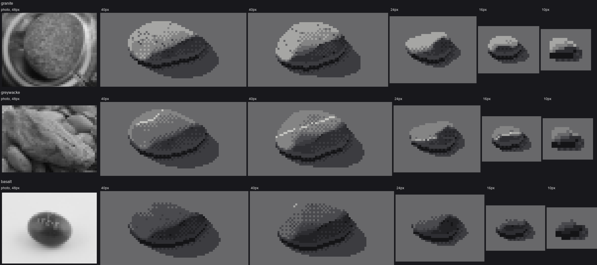
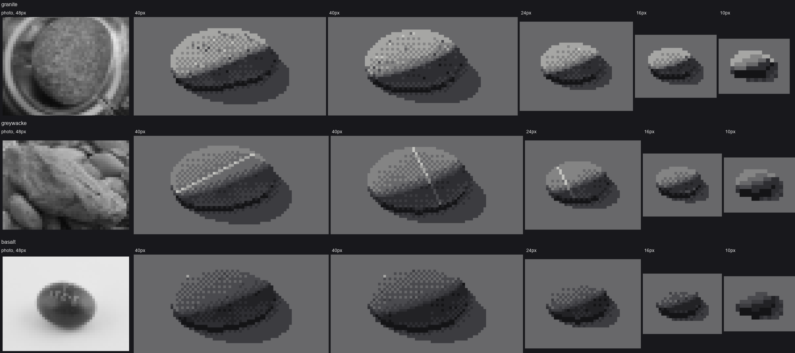
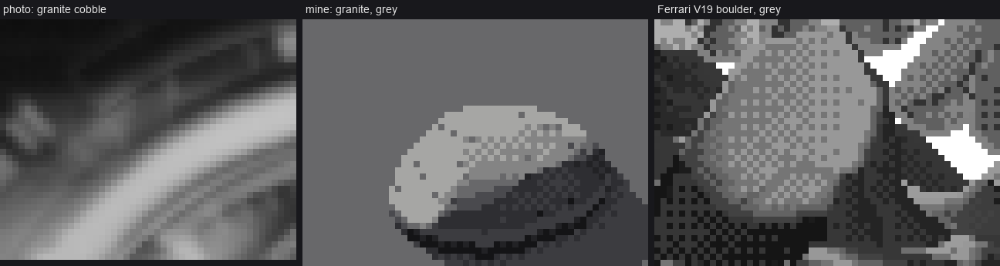

← the palette is the light · front page · next: packing a bar →
When: you want a cobble to read as granite, greywacke or basalt at 10–40 px.

Granite, greywacke and basalt in grey, from 40 to 10 px, each with a photo at 48 px wide on the left.
The first thing that tells rocks apart at pixel scale is value, not texture. In materials.ROCKS each rock's lit family is a different window on the step ramp:
ROCKS = {
'granite': dict(classes=(EDGE, TURN, FD, FL), shadow=(CONTACT, SH_DARK, SH, SH_LIGHT),
P=dict(face=(2.2, 3.0), face_clip=(2.3, 3.0), lump=0.12), lump_geo=0.14),
'greywacke': dict(classes=(SH_LIGHT, EDGE, TURN, FD), shadow=(CONTACT, SH_DARK, SH, SH_LIGHT),
P=dict(face=(2.0, 2.9), face_clip=(2.05, 2.9), lump=0.22, lump_px=4.0), lump_geo=0.08),
'basalt': dict(classes=(SH, SH_LIGHT, EDGE, TURN), shadow=(CONTACT, CONTACT, SH_DARK, SH),
P=dict(face=(2.0, 2.8), face_clip=(2.0, 2.8), lump=0.1), lump_geo=0.07),
}
Granite's face sits at the top of the ramp and basalt's two steps down. In greyscale that alone carries basalt: in the figure above it has almost no marks and still reads as a different rock.
One wrinkle, to be honest about it. Shifting the classes down means greywacke's and basalt's darkest lit steps are indices from the shadow half of the step ramp. In colour (page 6) each rock also gets its own lightness in palette.ROCK, so albedo is applied twice, and a basalt edge pixel picks up the sky's hue. It looks fine at every hour I tried, but if I did it again I'd keep the step windows the same for every rock and put albedo only in the palette.
Every mark is computed in the stone's own mask (object space, so it moves with the stone) and is an offset along the stone's own ramp, never a new value:
RAMP_ORDER = [CONTACT, SH_DARK, SH, SH_LIGHT, EDGE, TURN, FD, FL, TOP]
def step_up(v, k=1):
i = np.searchsorted(RAMP_ORDER, v)
return np.asarray(RAMP_ORDER)[np.clip(i + k, 0, len(RAMP_ORDER) - 1)]
def granite_speckle(v, m, lit, rng, size, density=0.10):
if size < 8:
return v
patch = smooth_noise(m.shape, rng, max(1.5, size / 10)) > -0.2 # where grains gather
r = rng.random(m.shape)
interior = m & ndi.binary_erosion(m, CROSS) & (edge_dist_down(m) > 1)
dens = np.where(lit, density, density * 0.35) # rare in shadow
dark = interior & patch & (r < dens * 0.75) # mostly dark (mica)
light = interior & patch & (r > 1 - dens * 0.25) & lit # a few light (feldspar)
dark &= ~(np.roll(dark, 1, 0) | np.roll(dark, 1, 1)) # a speck is ONE pixel
v = np.where(dark, step_up(v, -1 if size < 16 else -2), v)
v = np.where(light & ~dark, np.minimum(step_up(v, 1), FL), v)
return v
The patch field matters. Uniform speckle reads as noise laid on top of the stone, while patchy speckle reads as grain in the rock. Capping the light flecks at FL keeps them from becoming glints on a wet stone.

nb059. The trap: a vein drawn as one straight clean-run line of even brightness. It looks ruled, because it is.
A vein is 2–4 segments, each at a clean slope (flat, 1:4, 1:3, 1:2, 1:1), joined end to end across the stone. It's two steps up in the light and one in shadow, and it breaks rarely:
def wander_line(m, rng):
ys, xs = np.nonzero(m)
y = ys.mean() + rng.normal() * np.ptp(ys) * 0.2
x = xs.min() - 1.0
ang0 = rng.uniform(-0.6, 0.6)
line = np.zeros_like(m)
choices = [0.0, 0.25, 1 / 3, 0.5, 1.0]
while x < xs.max() + 1:
seg = rng.integers(3, 8)
slope = choices[rng.integers(len(choices))] * (1 if ang0 + rng.normal() * 0.4 > 0 else -1)
for _ in range(seg):
x += 1; y += slope
yi, xi = int(round(y)), int(round(x))
if 0 <= yi < m.shape[0] and 0 <= xi < m.shape[1]:
line[yi, xi] = True
return line & m
def greywacke_veins(v, m, rng, size, n=None, lit=None):
if size < 10:
return v
n = n if n is not None else rng.choice([0, 1, 1, 2])
for _ in range(n):
ln = wander_line(m, rng) & (edge_dist_down(m) > 0)
gap = rng.random(m.shape) < 0.04 # the vein dives, now and then
v = np.where(ln & ~gap, np.where(lit, step_up(v, 2), step_up(v, 1)), v)
return v
The gap rate matters a lot. At 12% the vein became a dotted line, evenly spaced pale pixels (critic, round 5). At 4% it reads as one vein with a break or two.
def basalt_marks(v, m, lit, s, rng, size):
if size >= 10:
pit = m & ndi.binary_erosion(m, CROSS) & (rng.random(m.shape) < 0.025) # a few vesicles
v = np.where(pit, step_up(v, -1), v)
if size >= 6 and lit.any(): # smooth dark rock carries the crispest glint
thr = np.percentile(s[m & lit], 98.5 if size >= 16 else 96)
g = m & lit & (s >= thr) & (edge_dist_up(m) > 0)
v = np.where(g, np.maximum(step_up(v, 2), v), v)
return v
The geometry carries the last clue: lump_geo feeds the 3D lumps (page 3). Granite gets 0.14 (knobbly), greywacke 0.08 (smooth), basalt 0.07.

Photo of a granite cobble | my granite | Ferrari's V19 boulder, all in grey.
Cover the labels on a sheet. If you can name each rock from 2 m away, albedo is doing its job. If you need to lean in, you're relying on the marks too much.